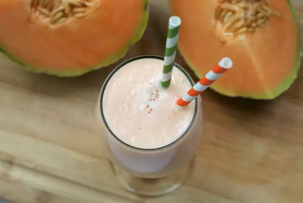

Cantaloupe Frenzy

Description
A cantaloupe smoothie!! Perfect for those hot summer days or an after school snack to cool down with!
Ingredients
- 1 cantaloupe - peeled, seeded and cubed
- 3 tablespoons white sugar, or to taste
- 2 cups ice cubes
Steps
- Place cantaloupe cubes and ice into the container of a blender.
- Process until the ice is in small pieces.
- Add sugar, and puree.
- Pour into tall glasses and serve immediately.